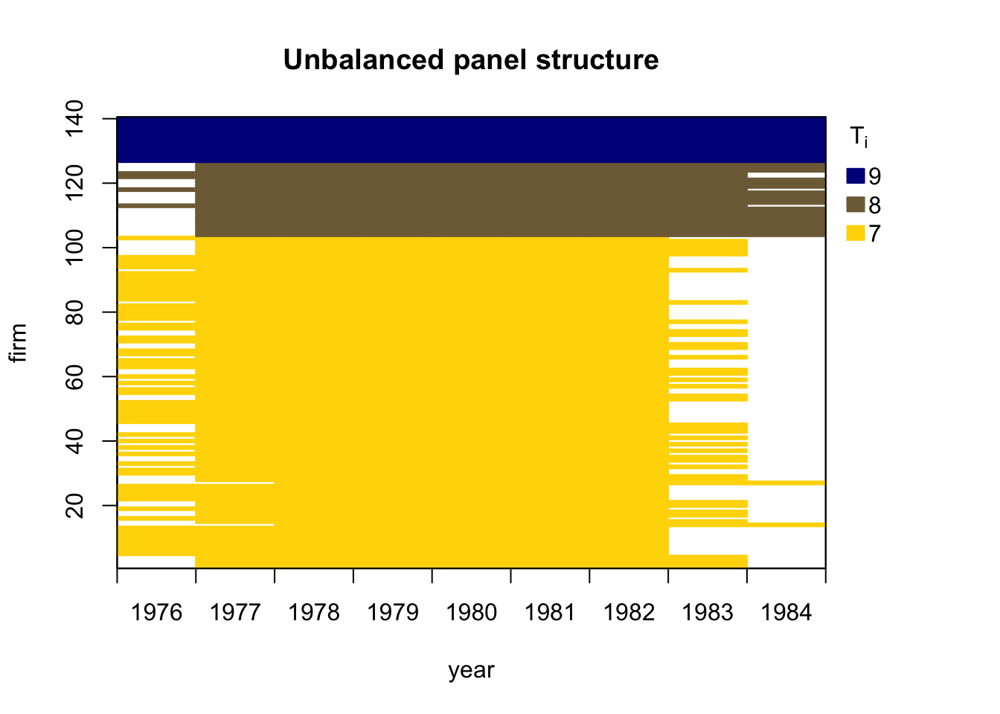

data("Grunfeld", package = "AER")
library(plm)
gr <- subset(Grunfeld, firm %in% c("General Electric", "General Motors", "IBM"))
pgr <- pdata.frame(gr, index = c("firm", "year"), drop.index = FALSE)18 Panel Regressions
Example: Data from Grunfeld (1958).
- 20 annual observations (1935–1954).
- 11 large US firms.
- Three variables: real gross investment (
invest), real value of the firm (value), and real value of the capital stock (capital).
Data structure:
- Two-dimensional index.
- Cross-sectional objects are called “individuals”.
- Time identifier is called “time”.
Data handling: Select subset of three firms for illustration and declare individuals (“firm”) and time identifier (“year”).
18.1 Pooled model
Pooled model:
\[ invest_{it} = \beta_0 + \beta_1\, value_{it} + \beta_2\, capital_{it} + e_{it}. \]
gr_pool <- plm(invest ~ value + capital, data = pgr, model = "pooling")
summary(gr_pool)Pooling Model
Call:
plm(formula = invest ~ value + capital, data = pgr, model = "pooling")
Balanced Panel: n = 3, T = 20, N = 60
Residuals:
Min. 1st Qu. Median 3rd Qu. Max.
-281.940 -94.923 37.000 80.991 291.322
Coefficients:
Estimate Std. Error t-value Pr(>|t|)
(Intercept) -101.603040 24.401927 -4.1637 0.0001071 ***
value 0.105016 0.010613 9.8952 5.526e-14 ***
capital 0.318719 0.040930 7.7870 1.553e-10 ***
---
Signif. codes: 0 '***' 0.001 '**' 0.01 '*' 0.05 '.' 0.1 ' ' 1
Total Sum of Squares: 5644500
Residual Sum of Squares: 748140
R-Squared: 0.86746
Adj. R-Squared: 0.86281
F-statistic: 186.524 on 2 and 57 DF, p-value: < 2.22e-1618.2 Fixed Effects
Individual fixed effects \[ \begin{aligned} invest_{it} &= \beta_1\, value_{it} + \beta_2\, capital_{it} + \alpha_i + e_{it} \\ &= \bx'_{it}\bbeta + \alpha_i + e_{it} . \end{aligned} \]
Assumptions
\[ \begin{aligned} \E[e_{it}] &= 0 \\ \E[\bx_{it}e_{it}] &= 0 \\ \E[\alpha_{it}e_{it}] &= 0 \\ \end{aligned} \]
gr_fe <- plm(invest ~ value + capital, data = pgr, effect = "individual", model = "within")
summary(gr_fe)Oneway (individual) effect Within Model
Call:
plm(formula = invest ~ value + capital, data = pgr, effect = "individual",
model = "within")
Balanced Panel: n = 3, T = 20, N = 60
Residuals:
Min. 1st Qu. Median 3rd Qu. Max.
-167.3305 -26.1407 2.0878 26.8442 201.6813
Coefficients:
Estimate Std. Error t-value Pr(>|t|)
value 0.104914 0.016331 6.4242 3.296e-08 ***
capital 0.345298 0.024392 14.1564 < 2.2e-16 ***
---
Signif. codes: 0 '***' 0.001 '**' 0.01 '*' 0.05 '.' 0.1 ' ' 1
Total Sum of Squares: 1888900
Residual Sum of Squares: 243980
R-Squared: 0.87084
Adj. R-Squared: 0.86144
F-statistic: 185.407 on 2 and 55 DF, p-value: < 2.22e-16Q: Are the fixed effects really needed?
A: Compare fixed effects and pooled OLS fits via pFtest().
pFtest(gr_fe, gr_pool)
F test for individual effects
data: invest ~ value + capital
F = 56.825, df1 = 2, df2 = 55, p-value = 4.148e-14
alternative hypothesis: significant effectsThis indicates substantial inter-firm variation.
Two-way fixed effects \[ invest_{it} = \beta_1\, value_{it} + \beta_2\, capital_{it} + \alpha_i + \gamma_t + e_{it}. \]
gr_fe2 <- plm(invest ~ value + capital, data = pgr, effect = "twoways", model = "within")
summary(gr_fe2)Twoways effects Within Model
Call:
plm(formula = invest ~ value + capital, data = pgr, effect = "twoways",
model = "within")
Balanced Panel: n = 3, T = 20, N = 60
Residuals:
Min. 1st Qu. Median 3rd Qu. Max.
-153.3683 -29.1392 2.2297 34.7902 125.2116
Coefficients:
Estimate Std. Error t-value Pr(>|t|)
value 0.129467 0.022436 5.7706 1.408e-06 ***
capital 0.418383 0.035293 11.8546 5.471e-14 ***
---
Signif. codes: 0 '***' 0.001 '**' 0.01 '*' 0.05 '.' 0.1 ' ' 1
Total Sum of Squares: 956890
Residual Sum of Squares: 137520
R-Squared: 0.85628
Adj. R-Squared: 0.76446
F-statistic: 107.246 on 2 and 36 DF, p-value: 6.8414e-1618.3 Random Effects
Model specification same as fixed effects but with different assumptions.
\[ \begin{aligned} invest_{it} &= \beta_1\, value_{it} + \beta_2\, capital_{it} + \alpha_i + e_{it} \\ &= \bx'_{it}\bbeta + \alpha_i + e_{it} . \end{aligned} \]
Assumptions
\[ \begin{aligned} \E[e_{it}] &= 0 \\ \E[\bx_{it}e_{it}] &= 0 \\ \E[\alpha_{it}e_{it}] &= 0 \\ \E[\bx_{it}\alpha_{i}] &= 0 \Leftarrow \text{New assumption}\\ \end{aligned} \]
\(\E[\bx_{it}u_{it}] = 0\) imposes uncorrelation between the covariates (\(\bx_{it}\)) and the fixed effects (\(u_{i}\)).
By contrast, in the fixed effects model, there is no such constraint, we can think of \(u_i\) as random, but potentially correlated with \(\bx_{it}.\)
In the panel data literature, approaches that do not restrict the dependence between the unobserved and the observed components are called “fixed effects.”
Random effects models is estimated by generalized least squares (GLS) by specify model = "random" in plm() call.
# Using Wallace-Hussain for Grunfeld data.
gr_re <- plm(invest ~ value + capital, data = pgr, model = "random", random.method = "walhus")
summary(gr_re)Oneway (individual) effect Random Effect Model
(Wallace-Hussain's transformation)
Call:
plm(formula = invest ~ value + capital, data = pgr, model = "random",
random.method = "walhus")
Balanced Panel: n = 3, T = 20, N = 60
Effects:
var std.dev share
idiosyncratic 4389.31 66.25 0.352
individual 8079.74 89.89 0.648
theta: 0.8374
Residuals:
Min. 1st Qu. Median 3rd Qu. Max.
-187.3987 -32.9206 6.9595 31.4322 210.2006
Coefficients:
Estimate Std. Error z-value Pr(>|z|)
(Intercept) -109.976572 61.701384 -1.7824 0.07468 .
value 0.104280 0.014996 6.9539 3.553e-12 ***
capital 0.344784 0.024520 14.0613 < 2.2e-16 ***
---
Signif. codes: 0 '***' 0.001 '**' 0.01 '*' 0.05 '.' 0.1 ' ' 1
Total Sum of Squares: 1988300
Residual Sum of Squares: 257520
R-Squared: 0.87048
Adj. R-Squared: 0.86594
Chisq: 383.089 on 2 DF, p-value: < 2.22e-16Recall: Random-effects estimator is essentially FGLS estimator, utilizing OLS after “quasi-demeaning” all variables. Precise form of quasi-demeaning depends on random.method selected. Four methods available: Swamy-Arora (default), Amemiya, Wallace-Hussain, and Nerlove.
Comparison of regression coefficients shows that fixed- and random-effects methods yield rather similar results for these data.
Q: Are the random effects really needed?
A: Use Lagrange multiplier test. Several versions available in plmtest().
plmtest(gr_pool)
Lagrange Multiplier Test - (Honda)
data: invest ~ value + capital
normal = 15.47, p-value < 2.2e-16
alternative hypothesis: significant effectsTest also suggests that some form of parameter heterogeneity must be taken into account.
Random-effects methods more efficient than fixed-effects estimator under more restrictive assumptions, namely exogeneity of the individual effects.
Use Hausman test to test for endogeneity.
\[ H_0: \text{The individual effects are uncorrelated with other regressors.} \]
phtest(gr_re, gr_fe)
Hausman Test
data: invest ~ value + capital
chisq = 0.04038, df = 2, p-value = 0.98
alternative hypothesis: one model is inconsistentIn line with estimates presented above, endogeneity does not appear to be a problem here. We can apply the Random effects model here.
18.4 Dynamic Linear Models
Arellano and Bond (1991) employ an unbalanced panel of \(n=140\) firms located in the UK. The dataset spans \(T=9\) time periods and is available from R package plm. Arellano and Bond (1991) investigate employment equations and consider the dynamic specification:
\[ \begin{split} emp_{i,t} &= \alpha_1 emp_{i,t-1} + \alpha_2 emp_{i,t-2} + \bbeta'(L) \bx_{it} + \lambda_t + \eta_i + \varepsilon_{i,t} \\ &= \alpha_1 emp_{i,t-1} + \alpha_2 emp_{i,t-2} \\ &\phantom{=}\quad + \beta_1 wage_{i,t} + \beta_2 wage_{i,t-1} \\ &\phantom{=}\quad + \beta_3 capital_{i,t} + \beta_4 capital_{i,t-1} + \beta_5 capital_{i,t-2} \\ &\phantom{=}\quad + \beta_6 output_{i,t} + \beta_7 output_{i,t-1} + \beta_8 output_{i,t-2} \\ &\phantom{=}\quad + \gamma_3 d_3 + \dots + \gamma_T d_T + \eta_i + \varepsilon_{i,t}, \end{split} \tag{18.1}\]
where \(i = 1,...,n\) denotes the firm, and \(t = 3,...,T\) is the time series dimension. The vector \(\bx_{it}\) contains a set of explanatory variables and \(\bbeta(L)\) is a vector of polynomials in the lag operator.
The natural logarithm of employment (\(emp\)) is explained by its first two lags and the further covariates
natural logarithm of wage (\(wage\)) and its first order of lag,
the natural logarithm of capital (\(capital\)) and its first and second lags,
the natural logarithm of output (\(output\)), and its first and second lags.
Variables \(d_3, \ldots, d_T\) are time dummies with corresponding coefficients \(\gamma_3, \ldots, \gamma_T\);
unobserved individual-specific effects are represented by \(\eta_i\), and
\(\varepsilon_{i,t}\) is an error term.
The goal of the empirical analysis is to estimate the lag parameters \(\alpha_1\) and \(\alpha_2\) and the coefficients \(\beta_j\) of the \(j=1,\ldots,8\) further covariates while controlling for (unobserved) time effects and accounting for unobserved individual-specific heterogeneity.
Let’s first run a simplified regression with pgmm.
data("EmplUK", package = "plm")
form <- log(emp) ~ log(wage) + log(capital) + log(output)Arellano-Bond estimator is provided by pgmm(). Dynamic formula derived from static formula via list of lags.
GitHub repo for pgmm: https://github.com/cran/plm/blob/59318399c6eb7bcaeb1d0560f1ce08882f0f55c1/R/est_gmm.R#L159
# Arellano and Bond (1991), table 4, col. b
empl_ab <- pgmm(
dynformula(form, list(2, 1, 0, 1)),
data = EmplUK, index = c("firm", "year"),
effect = "twoways", model = "twosteps",
transform = "d",
gmm.inst = ~ log(emp), lag.gmm = list(c(2, 3))
)Dynamic model with
- \(p=2\) lagged endogenous terms
- \(\log(wage)\) and \(\log(output)\) occur up to lag 1
- \(\log(capital)\) contemporaneous term only
- time- and firm-specific effects,
- instruments are lagged terms of the dependent variable (all lags beyond lag 1 are to be used).
transform = "d"uses the “difference GMM” model (see Arellano and Bond 1991) or “ld” for the “system GMM” model (see Blundell and Bond 1998).
summary(empl_ab)Twoways effects Two-steps model Difference GMM
Call:
pgmm(formula = dynformula(form, list(2, 1, 0, 1)), data = EmplUK,
effect = "twoways", model = "twosteps", transformation = "d",
index = c("firm", "year"), gmm.inst = ~log(emp), lag.gmm = list(c(2,
3)))
Unbalanced Panel: n = 140, T = 7-9, N = 1031
Number of Observations Used: 611
Residuals:
Min. 1st Qu. Median Mean 3rd Qu. Max.
-0.587961 -0.021925 0.000000 0.002027 0.036812 0.709073
Coefficients:
Estimate Std. Error z-value Pr(>|z|)
lag(log(emp), c(1, 2))1 0.0168324 0.2749274 0.0612 0.95118
lag(log(emp), c(1, 2))2 0.0076269 0.0639007 0.1194 0.90499
log(wage) -0.3238139 0.1634338 -1.9813 0.04756 *
lag(log(wage), 1) -0.0113247 0.1193372 -0.0949 0.92440
log(capital) 0.3934478 0.0587112 6.7014 2.064e-11 ***
log(output) 0.4032315 0.1791580 2.2507 0.02440 *
lag(log(output), 1) -0.0454226 0.1805358 -0.2516 0.80135
---
Signif. codes: 0 '***' 0.001 '**' 0.01 '*' 0.05 '.' 0.1 ' ' 1
Sargan test: chisq(10) = 13.44187 (p-value = 0.2)
Autocorrelation test (1): normal = 0.1873592 (p-value = 0.85138)
Autocorrelation test (2): normal = -0.5052488 (p-value = 0.61338)
Wald test for coefficients: chisq(7) = 100.2117 (p-value = < 2.22e-16)
Wald test for time dummies: chisq(6) = 10.3887 (p-value = 0.10921)Interpretation: Autoregressive dynamics important for these data.
Diagnostics:
Sargan test: Assesses the validity of the instruments. A p-value of 0.2 indicates the instruments are valid.
Autocorrelation test (1): Tests for first-order serial correlation. A p-value > 0.05 indicates that first-order serial correlation is not present.
The autocorrelation test is based on Arellano and Bond Serial Correlation Test. The null hypothesis is that there is no serial correlation of a particular order. The test statistic is computed as proposed by Arellano and Bond (1991) and Arellano (2003).
- p-value < 0.05 indicates the presence of serial correlation.
Wald Tests: Assesses the joint significance of all the coefficients or time dummies in the model. The p-value < 0.05 confirms the coefficients and time dummies significantly affect the dependent variable.
Note: Due to constructing lags and taking first differences, three cross sections are lost. Hence, estimation period is 1979–1984 and only 611 observations effectively available for estimation.
pgmm.W: a list of instruments matrices for every individual
# print the instrument matrix for firm 1
empl_ab$W[[1]]
1979 0 0 0.000000 0.000000 0.000000 0.000000 0.000000 0.000000 0.000000
1980 0 0 1.617604 1.722767 0.000000 0.000000 0.000000 0.000000 0.000000
1981 0 0 0.000000 0.000000 1.722767 1.612433 0.000000 0.000000 0.000000
1982 0 0 0.000000 0.000000 0.000000 0.000000 1.612433 1.550749 0.000000
1983 0 0 0.000000 0.000000 0.000000 0.000000 0.000000 0.000000 1.550749
1984 0 0 0.000000 0.000000 0.000000 0.000000 0.000000 0.000000 0.000000
log(capital) log(output) lag(log(output), 1)
1979 0.000000 0 0 0 0 0 0 0 0 0.00000000 0.000000000 0.000000000
1980 0.000000 0 0 -1 1 0 0 0 0 -0.09278789 0.009410626 0.022861846
1981 0.000000 0 0 0 -1 1 0 0 0 -0.19533733 -0.009914737 0.009410626
1982 0.000000 0 0 0 0 -1 1 0 0 -0.18255803 -0.009517010 -0.009914737
1983 1.409278 0 0 0 0 0 -1 1 0 -0.07587391 0.014246777 -0.009517010
1984 0.000000 0 0 0 0 0 0 0 0 0.00000000 0.000000000 0.000000000
log(wage) lag(log(wage), 1)
1979 0.00000000 0.00000000
1980 0.07242480 0.04278076
1981 0.03458784 0.07242480
1982 0.03967898 0.03458784
1983 -0.07611583 0.03967898
1984 0.00000000 0.00000000Dynamic models using pdynmc.
# compute logarithms of variables
EmplUK_log <- EmplUK
EmplUK_log[,c(4:7)] <- log(EmplUK_log[,c(4:7)])
head(EmplUK_log) firm year sector emp wage capital output
1 1 1977 7 1.617604 2.576543 -0.5286502 4.561294
2 1 1978 7 1.722767 2.509746 -0.4591824 4.578384
3 1 1979 7 1.612433 2.552526 -0.3899363 4.601245
4 1 1980 7 1.550749 2.624951 -0.4827242 4.610656
5 1 1981 7 1.409278 2.659539 -0.6780615 4.600741
6 1 1982 7 1.152469 2.699218 -0.8606196 4.591224## data structure check for unbalancedness
library(pdynmc)
data.info(EmplUK_log, i.name = "firm", t.name = "year")Unbalanced panel data set with 1031 rows and the following time period frequencies: 1976 1977 1978 1979 1980 1981 1982 1983 1984
80 138 140 140 140 140 140 78 35 strucUPD.plot(EmplUK_log, i.name = "firm", t.name = "year")
# Run pdynmc
m1 <- pdynmc(
dat = EmplUK_log, varname.i = "firm", varname.t = "year",
use.mc.diff = TRUE, use.mc.lev = FALSE, use.mc.nonlin = FALSE,
include.y = TRUE, varname.y = "emp", lagTerms.y = 2,
fur.con = TRUE, fur.con.diff = TRUE, fur.con.lev = FALSE,
varname.reg.fur = c("wage", "capital", "output"), lagTerms.reg.fur = c(1,2,2),
include.dum = TRUE, dum.diff = TRUE, dum.lev = FALSE, varname.dum = "year",
w.mat = "iid.err", std.err = "corrected",
estimation = "onestep", opt.meth = "none"
)
summary(m1)
Dynamic linear panel estimation (onestep)
GMM estimation steps: 1
Coefficients:
Estimate Std.Err.rob z-value.rob Pr(>|z.rob|)
L1.emp 0.686226 0.144594 4.746 < 2e-16 ***
L2.emp -0.085358 0.056016 -1.524 0.12751
L0.wage -0.607821 0.178205 -3.411 0.00065 ***
L1.wage 0.392623 0.167993 2.337 0.01944 *
L0.capital 0.356846 0.059020 6.046 < 2e-16 ***
L1.capital -0.058001 0.073180 -0.793 0.42778
L2.capital -0.019948 0.032713 -0.610 0.54186
L0.output 0.608506 0.172531 3.527 0.00042 ***
L1.output -0.711164 0.231716 -3.069 0.00215 **
L2.output 0.105798 0.141202 0.749 0.45386
1979 0.009554 0.010290 0.929 0.35289
1980 0.022015 0.017710 1.243 0.21387
1981 -0.011775 0.029508 -0.399 0.68989
1982 -0.027059 0.029275 -0.924 0.35549
1983 -0.021321 0.030460 -0.700 0.48393
1976 -0.007703 0.031411 -0.245 0.80646
---
Signif. codes: 0 '***' 0.001 '**' 0.01 '*' 0.05 '.' 0.1 ' ' 1
41 total instruments are employed to estimate 16 parameters
27 linear (DIF)
8 further controls (DIF)
6 time dummies (DIF)
J-Test (overid restrictions): 48.75 with 25 DF, pvalue: 0.003
F-Statistic (slope coeff): 528.06 with 10 DF, pvalue: <0.001
F-Statistic (time dummies): 14.98 with 6 DF, pvalue: 0.0204mtest.fct(m1)
Arellano and Bond (1991) serial correlation test of degree 2
data: 1step GMM Estimation
normal = -0.51603, p-value = 0.6058
alternative hypothesis: serial correlation of order 2 in the error termsjtest.fct(m1)
J-Test of Hansen
data: 1step GMM Estimation
chisq = 48.75, df = 25, p-value = 0.00303
alternative hypothesis: overidentifying restrictions invalidwald.fct(m1, param = "all")
Wald test
data: 1step GMM Estimation
chisq = 2234.2, df = 16, p-value < 2.2e-16
alternative hypothesis: at least one time dummy and/or slope coefficient is not equal to zeromtest.fct(m1) is used to test second order serial correlation.
jtest.fct(m1) is used to test Hansen \(J\)-test of overidentifying restrictions.
wald.fct(m1, param = "all") is used to test the null hypothesis that the population parameters of all coefficients included in the model are jointly zero.
References
Guillermo Corredor, Dynamic AR(1) Panel Estimation in R, https://bookdown.org/gcorredor/dynamic_ar1_panel/dynamic_ar1_panel.html
Kleiber, C. and Zeileis A. (2017), Chap 3 Linear Regression, Applied Econometrics with R.
Arellano M, Bond S (1998). “Dynamic panel data estimation using DPD98 for GAUSS: a guide for users.” unpublished.
Arellano M, Bond S (2012). “Panel data estimation using DPD for Ox.” unpublished, https://www.doornik.com/download/oxmetrics7/Ox_Packages/dpd.pdf.
Blundell R, Bond S (1998). “Initital Conditions and Moment Restrictions in Dynamic Panel Data Models.” Journal of Econometrics, 87, 115–143.
Roodman D (2009). “How to do xtabond2: An introduction to difference and system GMM in Stata.” The Stata Journal, 9, 86-136. https://www.stata-journal.com/article.html?article=st0159.
Arellano, Manuel. 2003. Panel Data Econometrics. Panel Data Econometrics. Oxford University Press. https://doi.org/10.1093/0199245282.001.0001.
Arellano, Manuel, and Stephen Bond. 1991. “Some Tests of Specification for Panel Carlo Application to Data: Monte Carlo Evidence and an Application to Employment Equations.” Review of Economic Studies 58: 277–97.